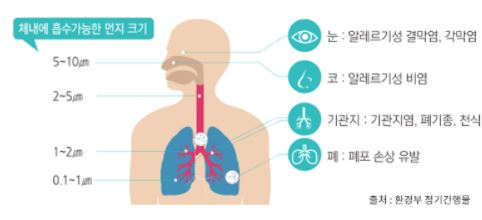
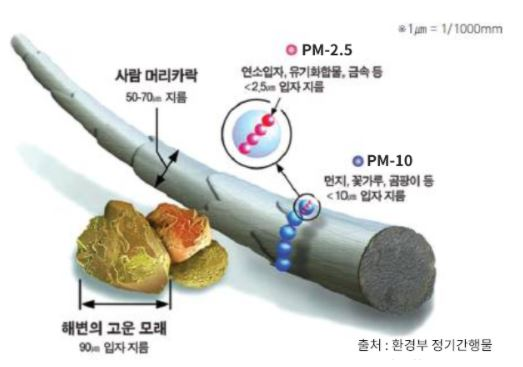
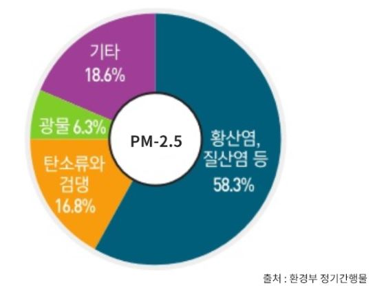

미세먼지란?
대기 중에 떠다니거나 흩날려 내려오는 입자상물질로, 입자의 지름이 10㎛ 이하인 먼지(PM-10, 미세먼지)와 지름이 2.5㎛ 이하인 먼지(PM-2.5, 초미세먼지)로 구분할 수 있습니다.
미세먼지로 인해 발생할 수 있는 각종 질병
미세먼지는 크기가 아주 작기 때문에 대기 중에 머뭅니다.
호흡기를 거쳐 폐 등에 침투하거나 혈관을 따라 체네로
이동하여
들어감으로써 건강에 나쁜 영향을 미칠 수가 있습니다.

미세먼지 크기 비교
초미세먼지는 석탄이나 석유와 같은 화석연료를 태우거나,
공장과 자동차에서 나오는 배출가스에서 주로 발생합니다.
초미세먼지의 지름은 머리카락 두께의 20분의 1 정도로
매우 짧으며, 세계보건기구(WHO)는 2013년에 초미세먼지를
1급 발암물질로 지정하였습니다.

미세먼지 성분 구성
미세먼지를 이루는 성분은 미세먼지가 발생한 지역이나,
계절,기상조건등에 따라 달라질 수 있다.
일반적으로 대기오염물질이 공기 중에 반응하여 형성된
덩어리(황산염,질산염)와 화석연료를 사용하는 과정에서
발생하는 탄소류와 검댕,지표면 흙먼지 등에서 생기는
광물 등으로 구성됩니다

그래프로 보기(click)